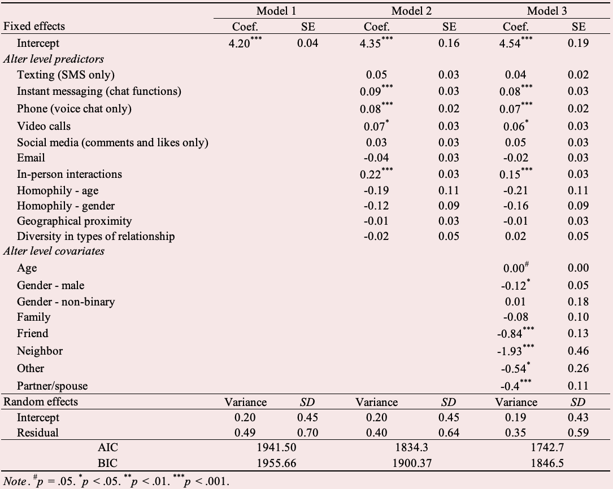
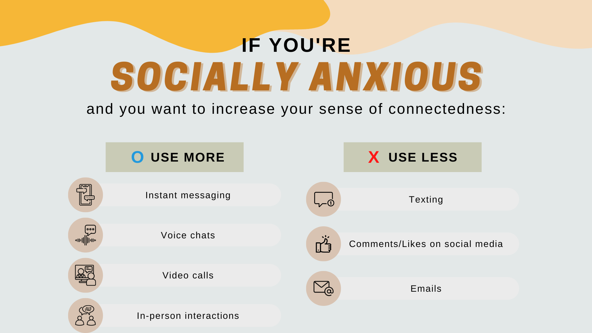

| My Role |
Team |
Affiliation |
Timeline |
| Lead Quantitative Researcher |
Myself
2 Researchers |
University of Southern California |
Sep 2021 - Feb 2023 |
The Problem
COVID-19 has changed how people maintain social relationships—we see more remote/virtual communication in everyday life and workplaces. However, some people have difficulty re-adjusting to in-person interactions due to social anxiety disorder (SAD) developed or increased during the pandemic. It's critical to understand how remote vs. in-person communication helps their social relationships to reengage these people in on-site settings.
Impact
The study identified that physical presence (i.e., face-to-face interaction) is not the primary driver of social connection; rather, it is concurrent communication that matters most.
Research Questions
Which is better (remote vs. in-person) to feel connected to close relationships (e.g., family, friends)?
How can we increase the sense of connectedness for socially anxious people?
Goals
Find out which types of communication methods increase social connectedness.
Investigate ways to increase the sense of connectedness for socially anxious people.
Research Design
200 socially anxious people were recruited through Prolific in December 2021.
An ego network approach was taken in designing the survey.
169 egos and 828 alters in total were included in the analysis.
Analysis

Multilevel modeling in R using the lme4 package.
All the alter-level predictors and alter-level covariates were entered simultaneously (Model 3 in the above table).
Findings

Whether the communication medium is in-person or remote doesn't matter for socially anxious people’s sense of connectedness. The more important thing is whether the communication medium is "synchronous."
Synchronous Communication
Instant messaging, voice chats, and video calls predicted the sense of connectedness.
In-person interactions predicted the sense of connectedness.
Asynchronous Communication
Texting, comments/likes on social media, and emails did not predict the sense of connectedness.
Recommendations
To engage socially anxious people in social interactions, provide synchronous modes of communication than communication methods that take time to exchange responses.
To treat social anxiety, use synchronous intervention methods (such as VR) to lower the level of social anxiety.
Challenges
Compare how synchronous vs. asynchronous communication methods affect healthy individuals (people without social anxiety).
Explore more ego network factors (e.g., alter-alter ties) and similarity factors (e.g., political affiliation, beliefs).